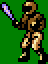
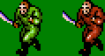
- Перепрыгивает только ямы.
- При столкновении со стеной - отворачивается.
- Он и дочерние объекты при старте ниже / выше, прыгнут вначале.
- 2 раза попытается перепрыгнуть стену. Если не получится, то побежит в другую сторону.
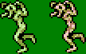
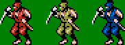
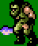
- Стреляет за одинаковый промежуток времени.
- Маленький меч не может уничтожить пули.
- Маленький сюрикен летит на уровне пули: уничтожает её.
- Под пулей можно сидеть.
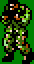
- Стреляет за одинаковый промежуток времени.
- Маленький меч уничтожает пули.
- Маленький сюрикен летит на уровне пули: уничтожает её.
- Под пулей нельзя сидеть.
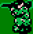
- Точную максимальную высоту прыжка заранее подсчитать сложно, поскольку замедление может начаться при разных уровнях подъёма.
- Уничтожается, если больше 250 пикселей по Y размера комнаты.
- Звук воспроизводится, когда находится на высоте выше view_yview+242.
- Кидает один сюрикен. Маленьким мечом уничтожить нельзя.
- Этот же сюрикен используется при отлетании от шефа.
- Выпрыгивает на краю экрана.
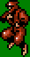
- Может кинуть нож стоя или сидя.
- С платформы, доходя до края, не падает, а отворачивается.
- Маленький меч может уничтожить брошенный и сидя, и стоя нож. Но тогда, конечно, надо стоять или сидеть, если маленьким мечом.
- Сидеть под ножом, брошенным стоя, можно.
- Маленький сюрикен уничтожает только брошенный стоя нож.
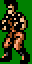
- Стреляет за различный промежуток времени.
- Маленьким мечом можно уничтожить пули.
- Маленький сюрикен летит на уровне пули: уничтожает её.
- Под пулей сидеть нельзя.
- Нижняя граница установлена специально на 6, чтобы пуля задевала игрока, если он карабкается по стене на платформу со слугой.
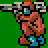
Код очень схож с кодом ниндзя-сюрикена. Отталкивает на то же расстояние при коллизии. Разница в следующем:
- Стреляет тремя сюрикенами. Для этого появились Alarm2 и3.
- Выпрыгивает чуть раньше, чем ниндзя-сюрикен.
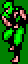
- Кидает за одинаковый промежуток времени 1 серп.
- Уничтожить можно любым мечом.
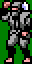
- Кидает за одинаковый промежуток времени 1 пулю.
- Направление корректируется через разное время.
- Пулю нельзя уничтожить маленьким мечом.
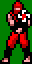
- При собственной защите ему нестрашны ни оружия, ни мечи.
- Стреляет двумя пулями за одинаковый промежуток времени. При выстреле не поворачивается.
- Маленький сюрикен отлетает при защите слуги в Ункенде.
- Под пулей нельзя сидеть.
- Пули можно уничтожить маленьким мечом.
- Маленький сюрикен летит выше пуль: их не уничтожить, стоя на одном уровне со слугой.
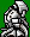
- Стреляет через разный промежуток времени по 2 пули. Может повернуться между выстрелом первой и второй.
- Пытается перепрыгнуть только раз стену. Затем отворачивается.
- Маленький сюрикен летит на уровне пуль: может их уничтожить.
- Под пулей нельзя сидеть.
- Пули нельзя уничтожить маленьким мечом.
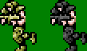
- Пытается перепрыгнуть стену 2 раза. Затем отворачивается.
- Раздвоение происходит за разное время, и только у оригинала.
- Двойников может быть от 3 до 6 включительно.
- Они бегут в первоначальную сторону - на игрока. Направление может измениться только после разморозки от Time Freeze.
- При Time Freeze раздвоение не происходит.
- Двойники не оставляют флагов.
- Двойники отнимают столько же ударов.
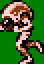

 |
||||